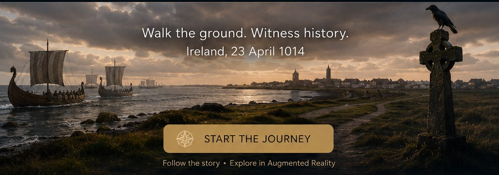

The story unfolds
Four chapters from dawn to aftermath
This starter tour is designed for GitHub Pages and slow mobile connections. The core pages and scene images are cached after the first visit.

The story unfolds
This starter tour is designed for GitHub Pages and slow mobile connections. The core pages and scene images are cached after the first visit.